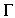
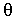
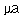
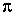
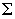
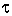
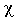
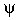

The names of the letters of the Greek alphabet could be fingerspelled, but this becomes awkward when dealing with equations. Some people represent these letters by taking the handshape for the first Roman letter of the name and bringing it down the nose once or twice, similar to the sign GREECE. This leads to some difficulties with Greek letters whose names start with the same Roman letter, for example, pi, phi,and psi.Another alternative is to trace the shape of the letters in the air, as if you were writing them on an invisible blackboard. This option works for most of the letters, but is not as clear with some of the letters that require "lifting the chalk from the board" to write. It seems more visual to represent these letters by a static handshape (one-handed or two-handed). These special letters are listed below. Explanation of glossing system
- 
- (2h)[1], NDH PO > DS, DH PO down, FTs touching.
- 
- DH [1], PO down, FO > NDS, is held in front of (or behind) NDH [O], PO > DS.

- (1) [V], PO towards, FO down. (2) (2h)[1], FOs up at angle, POs ><, meet at FTs to form angle indicated by shape of letter.

- (1) [3], PO towards, FO down. (2) (2h)[1], FOs up at angle, POs ><, NDFT meet at the second joint of the dominant finger.

- Draw in the air for the regular use of that letter, but use [U] to represent the abbreviation for "micro", as in mu + a" > for "microampere."
- 
- (1) Index and little fingers of DH are pointed downwards. (2) DH [1], PO down, FO > DS is held above and touching NDH [V], PO away from signer, FO up.
- 
- (1) DH [1] traces a sigma,behind NDH [W], held with FO > DS. (2) DH [1] traces a sigma.
- 
- DH [1], PO down is held above and touches middle joint to NDH [1:], PO > DS, FO up.

- DH [X], PO down, FO > NDS, touches the top of NDH [1], PO > DS, FO up.
- 
- Cross index fingers, FOs up at an angle to resemble letter.
- 
- Same as the sign PSYCHOLOGY (some people start this sign with
THINK, in which case I mean the later half of the compound.)

- [bC], PO down, held so that the omegashape is seen clearly.

- [W:], PO away from signer, FO up.